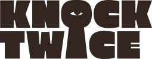

Leave us your email and we'll let you know when we're ready to welcome you in.
Hmm. That email doesn't look right. Try again?
It'll be worth it, we promise.
We'll knock when we're ready. Keep an eye out.